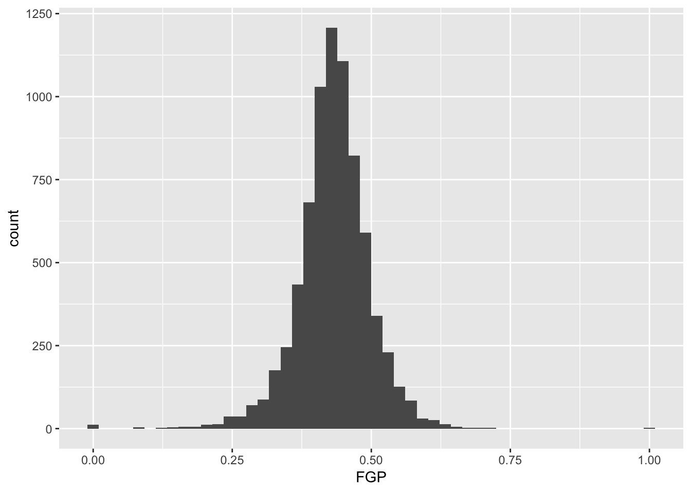
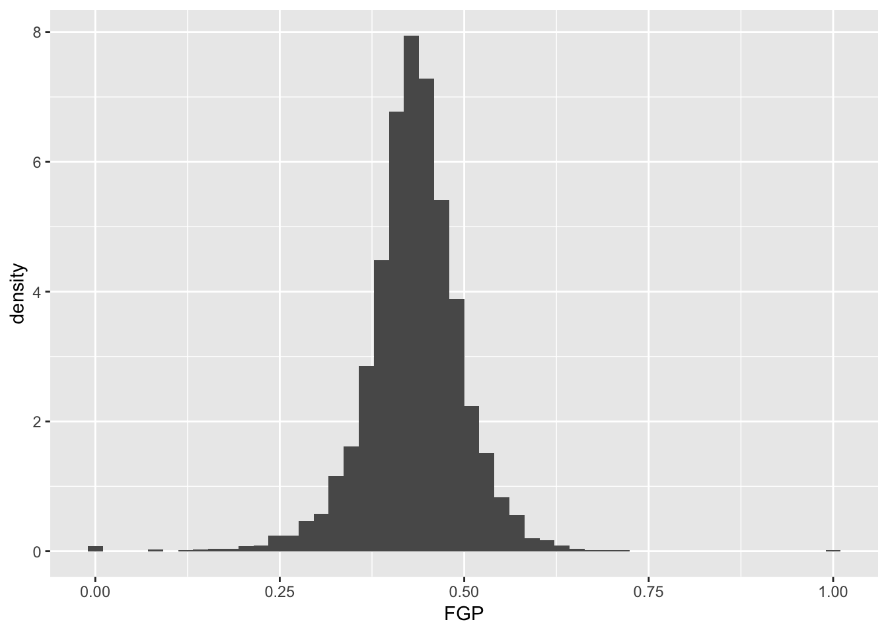
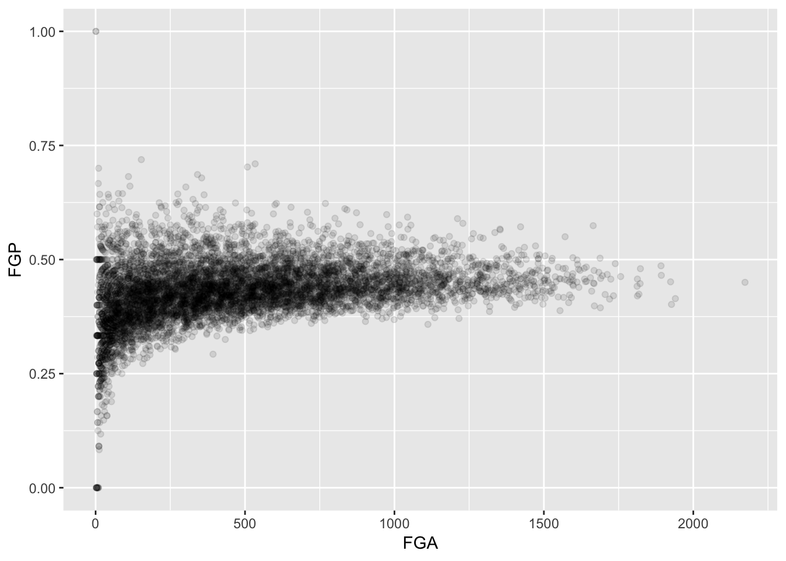
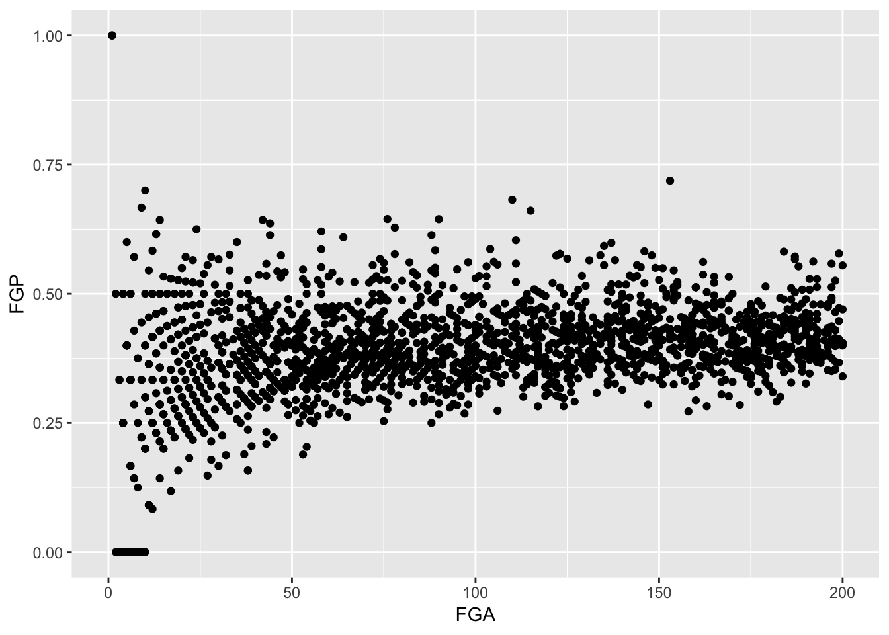

Module 2: Tabular Data and Basic Plots
The tidyverse
So far we have seen only the most basic of R’s functionality. Arguable, one of the things that makes R so powerful is the ease with which users are able to define their own functions and release them to the public. As Hadley Wickhamn defines them, “[R] packages are fundamental units of reproducible code. They include reusable R functions, the documentation that describes how to use them, and sample data.” As of July 8, 2018, there are 12,725 packages available from the Comprehensive R Archive Network. The scope of these packages is vast: there are some designed for scraping data from the web, pre-processing data to get it into an analyzable format, performing standard and specialized statistical analyses, and to publish your results. People have also released packages tailored to very specific applications like analyzing baseball data. There are also some more whimsical packages, like one that allow you to display your favorite XKCD comic strip!
For the rest of the course, we will be working within the ``tidyverse’’, which consists of several R packages for data manipulation, exploration, and visualization. They are all based on a common design philosophy, mostly developed by Hadley Wickham (whose name you will encounter a lot as you grain more experience with R). To load all of these packages, you can run the code
> library(tidyverse)When you do that, you’ll see a lot of output to the console, most of which you can safely ignore for now.
Tibbles
In Module 1 and Problem Set 1, we loaded tabular data into R by hand, creating a separate vector for each column. In order to associate each element of each vector with the particular player, we named the elements of the vectors in a consistent fashion. For instance, when working with the table of NBA data, we named the elements of the vectors so that that the first element of all of them contained Steph Curry’s data while the eigth element of all them contained Dirk Nowitzki’s data.
When we start to work with larger datasets that contain many more rows and columns than this simple example, storing each column as a vector and naming each element may prove rather annoying. Instead, we would like to load the data as a table.
Within the tidyverse, the standard way to store and manipulate tabular data is to use what is known as a tbl (pronounced “tibble”). At a high-level, a tbl is a two-dimensional array whose columns can be of different data types. That is, the first column might be characters (e.g. the names of athletes) and the second column can be numeric (e.g. the number of points scored).
We can go ahead and reload some of the data from the table in Module 1 (luckily, this shouldn’t take that much time because you’ve already saved the code in a script!).
> players <- c("Stephen Curry", "John Wall", "Jimmy Butler", "James Harden", "Kevin Durant",
+ "LeBron James", "Kristaps Porzingis", "Dirk Nowitzki", "Tim Duncan", "Andre Drummond")
> fga <- c(1597, 1349, 1034, 1617, 1381, 1416, 1112, 886, 442, 1061)
> fgm <- c(805, 572, 470, 710, 698, 737, 498, 373, 215, 552)
> tpm <- c(402, 115, 64, 236, 186, 87, 126, 81, 0, 2)
> tpa <- c(887, 327, 206, 657, 480, 282, 342, 243, 2, 6)
> ftm <- c(363, 272, 395, 720, 447, 359, 250, 201, 92, 208)
> fta <- c(400, 344, 475, 837, 498, 491, 280, 240, 131, 586)To create a tbl from a collection of vectors we can do the following
> shooting_data <- tibble(
+ Player = players,
+ Position = c("PG", "PG", "SG", "SG", "SF", "SF", "PF", "PF", "C", "C"),
+ FGM = fgm,
+ FGA = fga,
+ FTM = ftm,
+ FTA = fta,
+ TPM = tpm,
+ TPA = tpa
+ )Before printing out our tbl, let’s unpack the code. First, we are using the function tibble() to create shooting_data. Within the parantheses, we have several expressions with equal signs. On the left-hand side of each equal sign, we have a character string and on the right-hand side we have a vector. The character string on the left-hand side of the equal sign designates the column names of our tbl while the entries in each column are containined in the vectors on the right-hand side of each equal sign. Notice that we have added a column for the player’s position.
You’ll also notice that we have entered one expression per line. This is a common formatting and it makes it easy tell what is happening when we read it in an R script.
> shooting_data
# A tibble: 10 x 8
Player Position FGM FGA FTM FTA TPM TPA
<chr> <chr> <dbl> <dbl> <dbl> <dbl> <dbl> <dbl>
1 Stephen Curry PG 805 1597 363 400 402 887
2 John Wall PG 572 1349 272 344 115 327
3 Jimmy Butler SG 470 1034 395 475 64 206
4 James Harden SG 710 1617 720 837 236 657
5 Kevin Durant SF 698 1381 447 498 186 480
6 LeBron James SF 737 1416 359 491 87 282
7 Kristaps Porzingis PF 498 1112 250 280 126 342
8 Dirk Nowitzki PF 373 886 201 240 81 243
9 Tim Duncan C 215 442 92 131 0 2
10 Andre Drummond C 552 1061 208 586 2 6When we print our tbl, R outputs many things: the dimension (in this case, \(10 \times 7\)), the column names, the type of data included in each column, and then the actual data. When we work with larger datasets and try to print out the tbl containing the data, it will only ever print the first ten rows of the dataset, in addition to the column names and column types.
Subsetting
Very rarely will we need to access a specific element in a tbl. In order to do so, we may use the double-bracket notation [[]]. Since a tbl contains two dimensions (rows and columns), we need to provide both the row index and the column indices for the element we want to subset between the brackets.
> shooting_data[[1, 1]]
[1] "Stephen Curry"
> shooting_data[[5, 3]]
[1] 698In this course, we will almost never use the double bracket to extract elements from a tbl. More often than not, when we subset from a tbl, we will be pulling out individual columns. This can be done either by position or by name:
> shooting_data[[1]]
[1] "Stephen Curry" "John Wall" "Jimmy Butler"
[4] "James Harden" "Kevin Durant" "LeBron James"
[7] "Kristaps Porzingis" "Dirk Nowitzki" "Tim Duncan"
[10] "Andre Drummond"
> shooting_data[["FGM"]]
[1] 805 572 470 710 698 737 498 373 215 552We can further summarize individual columns of our tbl
> summary(shooting_data[["TPP"]])
Length Class Mode
0 NULL NULL Reading Data Into R
Of course, for any dataset that is of sufficiently interesting size, we would never enter the data into R directly. Instead, we often have to read it in from a file. We are going to dive right into an analysis of NBA shooting statistics for all players between the 1996-97 season and the 2015-16 season. The data is currently stored on your computer in a comma-separated files (which have extension ‘.csv’). We will need to load this into R before working with it.
Within the tidyverse, we can use the function read_csv() to read in a csv file that is stored on your computer and create a tibble containing all of the data. Our NBA shooting data is contained in a csv file named “nba_shooting.csv” in the “data” folder of our working directory. To read it into R with read_csv() we need to specify the path to the file like so:
> nba_shooting <- read_csv(file = "data/nba_shooting.csv")
Parsed with column specification:
cols(
PLAYER = col_character(),
SEASON = col_integer(),
FGM = col_integer(),
FGA = col_integer(),
TPM = col_integer(),
TPA = col_integer(),
FTM = col_integer(),
FTA = col_integer(),
FGP = col_double(),
TPP = col_double(),
FTP = col_double()
)
> nba_shooting
# A tibble: 7,447 x 11
PLAYER SEASON FGM FGA TPM TPA FTM FTA FGP TPP FTP
<chr> <int> <int> <int> <int> <int> <int> <int> <dbl> <dbl> <dbl>
1 Stephen Cu… 2016 805 1597 402 887 363 400 0.504 0.453 0.908
2 James Hard… 2016 710 1617 236 657 720 837 0.439 0.359 0.860
3 Kevin Dura… 2016 698 1381 186 480 447 498 0.505 0.388 0.898
4 DeMarcus C… 2016 601 1332 70 210 476 663 0.451 0.333 0.718
5 LeBron Jam… 2016 737 1416 87 282 359 491 0.520 0.309 0.731
6 Damian Lil… 2016 618 1474 229 610 414 464 0.419 0.375 0.892
7 Anthony Da… 2016 560 1137 35 108 326 430 0.493 0.324 0.758
8 Russell We… 2016 656 1444 101 341 465 573 0.454 0.296 0.812
9 DeMar DeRo… 2016 614 1377 47 139 555 653 0.446 0.338 0.850
10 Paul George 2016 605 1448 210 565 454 528 0.418 0.372 0.860
# … with 7,437 more rowsObserve that nba_shooting is a tibble with 7,447 rows and 11 columns. We see further that it includes columns for field goal percentage, free throw percentage, and three point percentage.
Visualization
We will use visualization to answer some questions about the data. Specifically, we will study the distribution of the individual columns as well as try to understand the relationship between pairs of variables. For instance, is a player’s free throw percentage predictive of his three point percentage?
To produce graphics throughout this course, we will use ggplot2, which is a package contained in the tidyverse. At a very high level, ggplot2 works by layering graphics, adding different features one on top of another. You can learn much much more about ggplot2 here. We will cover some of the more advanced functionality of ggplot2 in Module 5
Histograms
As you saw in Prof. Wyner’s lectures, histograms are a powerful way to describe a single dataset.
> ggplot(data = nba_shooting) + geom_histogram(mapping = aes(x = FGP), bins = 5)
The first bit of the code above, ggplot(data = nba_shooting) tells R to create a coordinate system to which can add additional layers. It also tells R that the data to be plotted is coming from the tibble nba_shooting. The next part of the code, + geom_histogram(mapping = aes(FGP), bins = 5) tells R to add a layer to the blank plot, in this case a histogram of field goal percentage that uses 5 bins. The first argument is the mapping, which defines how each variable in our dataset is mapped to visual components of the graph (the aesthetics) In the case of a histogram, we really only need to tell R that the variable we want to visualize goes on the horizontal (x) axis. To improve readability, we have divided the code to produce the historgram over two lines. It is very important when using ggplot to have the + sign at the end of the line.
In the code above, we also told R how many bins into which to divide the data. We can vary the number of bins to get a higher-resolution view of our data. For instance, we can use 50 bins: 
Instead of specifying the number of bins, which can sometimes be difficult, we could instead specify the width of the bins. For instance, we could split our data into bins of width 0.05 as follows:
> ggplot(data = nba_shooting) + geom_histogram(mapping = aes(x = FGP), binwidth = 0.05)
It is often preferable to use a density histogram instead of a frequency histogram. This is because the areas of the density histogram boxes always sums to 1 no matter how much data you have.
> ggplot(data = nba_shooting) + geom_histogram(mapping = aes(x = FGP, y = ..density..),
+ bins = 50) Visually, the histograms look identical but now the vertical (y) axis has a different scale.
Exercise Make histograms of FGA, FTA, TPA, FTP, and TPP. Comment on the differences
Visualizing bivariate data
While examining one variable (i.e. column of our data table) is useful, we are often more interested in understanding the relationships between multiple variables. For instance, how do you think a player’s free throw percentage (FTP) is related to his field goal percentage (FGP)?
To make a scatterplot in R, we can run the following code. Notice that it is very similar to the code used to make histograms, but with a few important differences
> ggplot(data = nba_shooting) + geom_point(mapping = aes(x = FGP, y = FTP))
Just like the code used to produce the histograms above, we began by calling ggplot(data = nba_shooting). Now, however, instead of calling geom_histogram() we are calling geom_point(). This tells R that instead of a histogram, we want to plot the data using points. We will learn much more about the different `geom'' objects available in ggplot2 in Lecture 4. Since we are plotting multiple variables, we need to tell R to which axis each variable is mapped. This is exactly whatmapping = aes(x = FGP, y = FTP)` does.
Immediately, we notice a few things about the figure. First, we see what appears to be a big black cloud of points in the middle of the plotting region. This is a result of R trying to plot lots and lots of data points in a small region of the plane. Additionally, we find a few rather interesting data points, corresponding to players who have never made a field goal but are perfect free throw shooters and to players who have never missed a field goal but have made only 50% of their free throws. A major drawback of this scatterplot is its inability to show the relative density of points. That is, does the point at (1.00, 0.50) correspond to a single player or does it correspond to multiple ones?
One way to address this is to use alpha-blending to change the transparency of each point. When there are many points plotted in the same region, that region will appear darker.
> ggplot(data = nba_shooting) + geom_point(mapping = aes(x = FGP, y = FTP), alpha = 0.1)
Now we can start to distinguish the number of players represented by each point. The fact that the point at (0.00, 0.50) is much darker than the point at (0.00, 1.00) indicates that there are more players who missed every one of their field goal attempts and made 50% of their free throws than players who missed every field goal but made every free throw.
To get an even better idea, we can make a heatmap, which you can think of as a two-dimensional analog of a histogram. To form a heatmap, you start by dividing the plane into lots of evenly-sized two-dimensional bins and counting the number of datapoints within each bin. You then color the bin according to the count. While you can conceptually make the bins any shape you want, there are two popular conventions: rectangular binning and hexagonal binning. For the purposes of this course, we will focus on rectangular binning, using the geom_bin2d() function.
> ggplot(data = nba_shooting) + geom_bin2d(aes(x = FGP, y = FTP))
We can increase the number of bins to get a much more high-resolution view of our data.
> ggplot(data = nba_shooting) + geom_bin2d(mapping = aes(x = FGP, y = FTP), bins = 100)
Now we are starting to get some sense that there are some outliers in our data. We can confirm this visually in another way
> ggplot(data = nba_shooting) + geom_point(mapping = aes(x = FGA, y = FGP), alpha = 0.1)
Sometimes, we don’t want to look at the entire range of the data and only want to plot a smaller window. We can do this by changing the x and y limits of the plotting region
> ggplot(data = nba_shooting) + geom_point(aes(x = FGA, y = FGP)) + xlim(0, 200)
Warning: Removed 5346 rows containing missing values (geom_point).
Thinking Ahead for Tomorrow
There were a number of players who had very few field goal attempts, free throw attempts, and/or three point attempts. We will eventually like to drop them from our analysis. In the next lecture, we will begin to explore how to manipulate and transform our nba_shooting object.